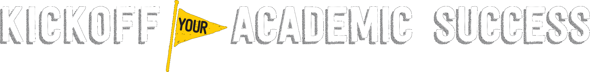

Register for The University of Iowa's

A free one-day intro session for first year students
Where: Pappajohn Educational Center
Downtown Des Moines, 1200 Grand Ave
Des Moines, IA 50309
Contact Info:
Kate Sojka, Director, Academic Support & New Student Initiatives
319-335-1733, Kathryn-sojka@uiowa.edu
Visit the Academic Support & Retention Website
Participants are responsible for parking fees.
Students will rotate in small groups through each session:
Supplemental Instruction (SI) is a free resource for students and is offered in several courses. Research shows that one 50-minute SI session is equivalent to studying on your own for about two hours. You will learn more about SI, how it can help you in your courses, as well as to experience a mock SI session.
Effective study skills are necessary for success in college. This workshop will address where, when, and how to study, as well as issues such as time management and behavioral choices.
Mathematics is an important part of many science, technology and business courses. In this workshop, we will discuss what you should expect when you take a math course at the University of Iowa. (Hint: It will be different from your math courses in high school!) We will also provide you with tips and resources that will help learn the math skills you need to be successful.
Are you nervous about writing papers for college classes? This workshop will give you tips and strategies for improving your writing skills and will help you prepare for a variety of writing assignments that you will encounter in college. We will practice some writing techniques and provide resources to help you be ready for your first papers in college.
This workshop will focus on how first-year students can establish a network of support at Iowa by connecting with resources and how they can begin to establish help-seeking behavior. There are several theoretical models related to help-seeking behavior and through a collection of research, those models have been applied to college students and their academic success.
**Free Lunch Will Be Provided